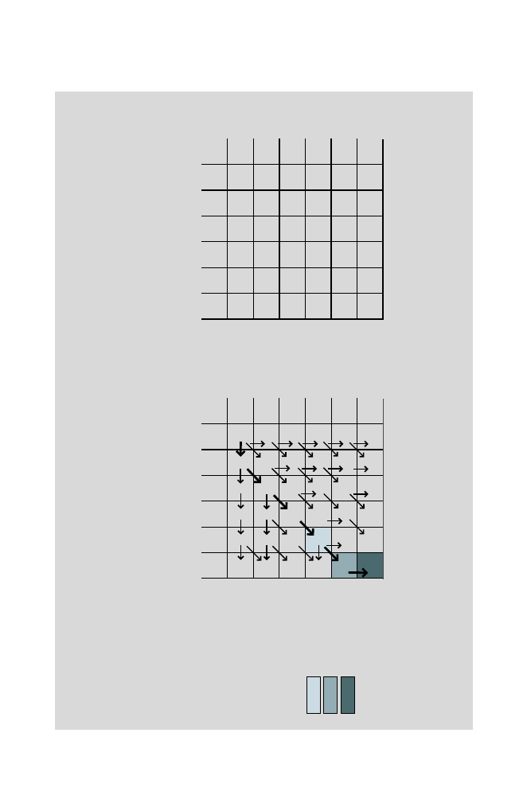

154
6 Sequence Alignment
Step 2: Fill in the first row and first column by using (6.11).
0 1 2 3 4 5
- T G G T G
0 - 0 -2 -4 -6 -8 -10
1 A -2
2 T -4
3 C -6
4 G -8
5 T -10
Step 3: Fill in all matrix elements using the scoring rules of (6.10) and keeping
track of the path into each element that was employed. Sometimes two
paths will yield equal scores.
0 1 2 3 4 5
- T G G T G
0 - 0 -2 -4 -6 -8 -10
1 A -2 -1 -3 -5 -7 -9
2 T -4 -1 -2 -4 -4 -6
3 C -6 -3 -2 -3 -5 -5
4 G -8 -5 -2 -1 -3 -4
5 T -10 -7 -4 -3 0 -2
Step 4: Read out the alignment, starting at (5, 5) and working backward.
For clarity, arrows corresponding to the path for the highest-scoring
alignment are drawn with heavier lines.
The matrix elements corresponding to the last three steps in the alignment
below are shown by corresponding shading.
A:
A T C G T -
B
:
- T G G T G